1. 基本思想と開始
主役はワイヤーです。完成形の輪郭、断面、曲面を導く線、窓や切れ目を同じワイヤーとして描きます。厚みのない形状ガイドは複雑な曲面を作る途中の補助で、物理的な完成品は部品です。
輪郭・断面・案内線
押し出し・厚み・演算
大きな部材へ近似・型紙
kcd2・図面・STL・STEP
できないことを、できたことにしません。線の隙間、自己交差、面のずれ、ゼロ体積などがあれば、理由番号と直し方を表示し、文書を途中状態にしません。
V2で扱うもの
| 種類 | 意味 | 主な使い方 |
|---|---|---|
| 作図点 | 位置だけを持つ基準 | 断面位置、交点、測定結果を残す |
| ワイヤー | 直線・円弧・円・ベジェ・B-splineの鎖 | 輪郭、断面、ガイド、開口、折り線、切れ目 |
| 作業平面 | 3D空間に置く作図用の紙 | 正確な2D作図と投影方向の基準 |
| 形状ガイド | 厚みのない面 | 複雑な曲面の設計、厚み付け、治具、製作近似 |
| 部品 | 体積のある閉じた立体 | 完成品、治具、製作部材、STL・STEP出力 |
| 製作モデル | 完成形とは別の、工作できる近似形 | 部材分け、曲げ確認、開口、型紙 |
| 型紙 | 平らにした部材 | SVG・DXF・1:1 PDF出力 |
起動と見本
配布zipを展開し、kachakacha_cad_next.exeを起動します。通常見本はsamples\v2-sample.kcd2、曲面を含む実用見本はsamples\streamlined-railway-nose-1-87.kcd2です。
2. 画面・ファイル・表示
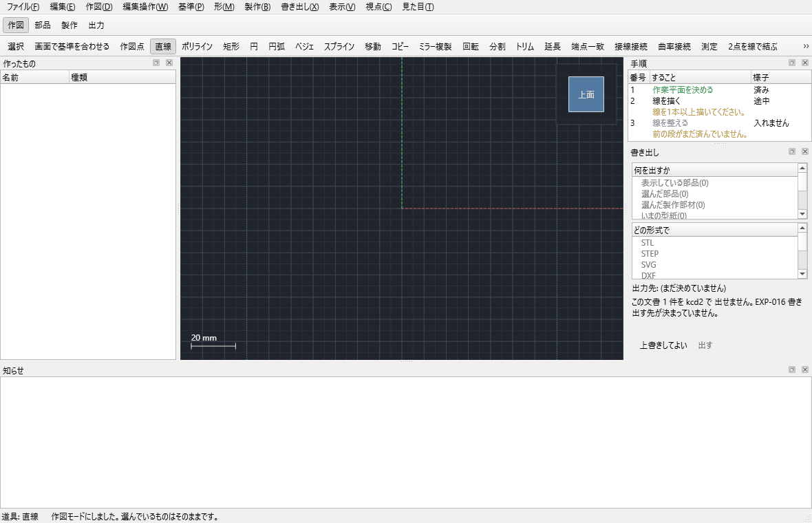
| 場所 | 役割 |
|---|---|
| 上のモード帯 | 作図・部品・製作・出力の4工程を切り替えます。文書と選択は維持されます。 |
| 2段目の道具列 | 現在のモードで使う道具だけを表示します。メニューと同じ処理です。 |
| 左の一覧 | 原点の3面・3軸、グループ、ワイヤー、形状ガイド、部品、製作モデルを表示します。名前・種類で絞り込めます。 |
| 中央の3D画面 | 作図、選択、測定、移動、視点操作を行います。 |
| 右の棚 | 作図、作業平面、数値、編集、形状ガイド、製作、出力など、現在の道具に必要な欄を表示します。 |
| 下の知らせ | 成功内容、使えない理由、問題箇所、直し方を番号付きで表示します。 |
ファイルと履歴
Ctrl+Nで新規、Ctrl+Oで開く、Ctrl+Sで保存します。保存は一時ファイルを検査してから置き換え、以前の内容は.bakへ残します。開いた直後はUndo履歴を空にします。
V1の.kcdも読めます。平面、主要な線、点、表示、断面ロフト、厚みをV2へ移します。V2に対応物がないV1命令は名前を知らせて読み飛ばし、元ファイルは変更しません。読み込んだ後は.kcd2で保存します。
選択・グループ・表示
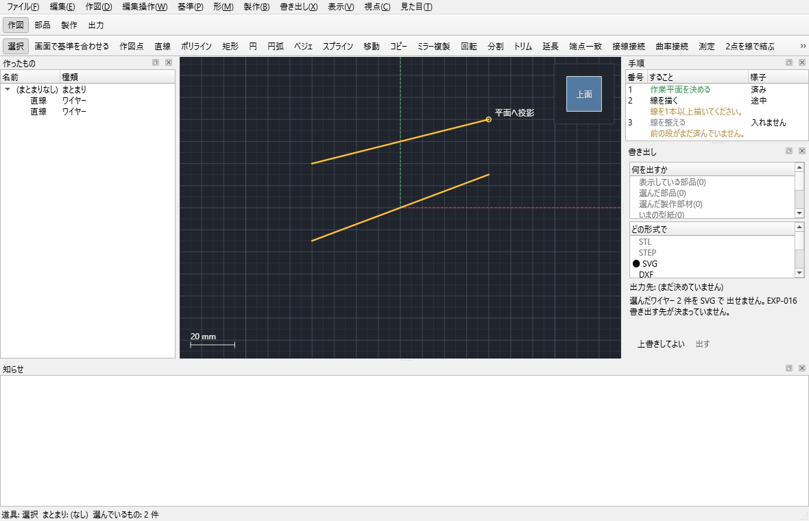
- 左クリックは単独選択、Shiftは追加、Ctrlは追加または解除、Altは解除です。
- 作業中グループを選ぶと、その後に作る点・線・平面・形状ガイド・部品が自動で入ります。派生物は元の下へ入ります。
- Ctrl+Hで選択を隠し、Ctrl+Shift+Hで全部表示します。
- Ctrl+1は設計表示、Ctrl+2はグリッドと補助線を消す完成形、Ctrl+3は選択だけです。
視点
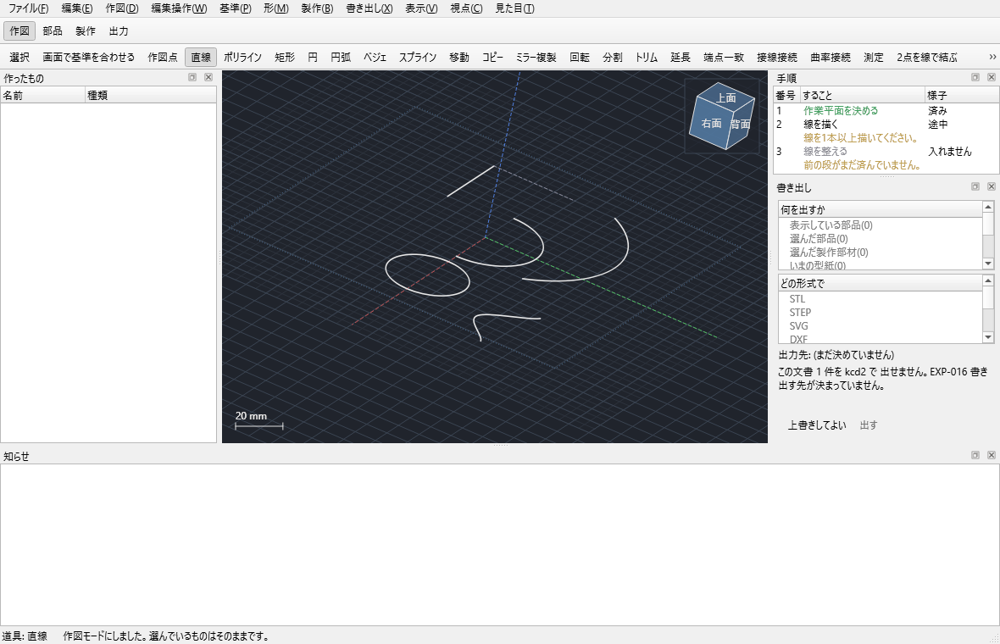
ホイールは拡大縮小、中または右ドラッグは平行移動、Shift+中ドラッグは軌道回転です。ビューキューブを離しても慣性回転や90度への自動吸着は起きません。Fで全体表示、選んだ平面には「選択に正対」、作業中の平面には「正対」を使います。
「見た目」から標準とWindows 95風を切り替えられます。外観だけが変わり、機能、配置、文書の形は変わりません。
3. 作図と数値入力
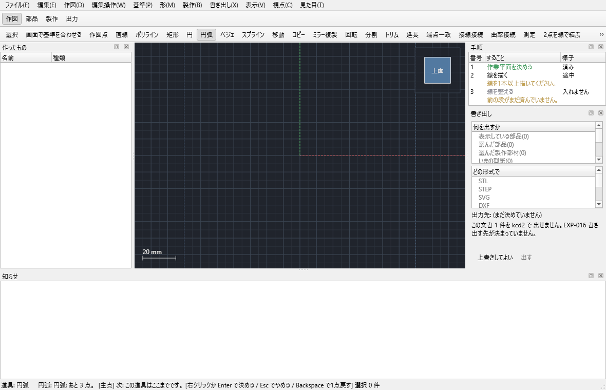
| 道具 | 入力 | 終了 |
|---|---|---|
| 作図点 | 1点。必要なら指定点を作図後にも残せます。 | 1クリック |
| 直線 | 始点と終点。座標・長さ・角度でも確定できます。 | 2点 |
| ポリライン | 2点以上。1つのワイヤーに複数直線を保持します。 | 右クリック |
| 矩形 | 対角2点、または幅と高さ。 | 2点 |
| 円 | 中心と半径。 | 2点 |
| 円弧 | 3点、両端+半径、始点+接線方向・半径・中心角の3方式です。 | 方式ごとの最終値 |
| ベジェ | 4制御点。 | 4点 |
| B-spline | 4点以上の制御点。 | 右クリック |
カーソル横の数値欄
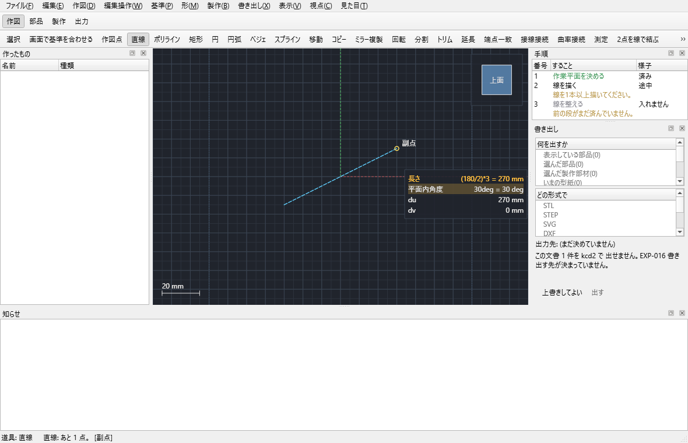
数字を打つとカーソル近くに入力欄が開きます。Tabで次、Shift+Tabで前、Enterで確定、Escで取消です。(180/2)*3、2*pi、単位、全角数字を扱えます。確定済みの値はマウス移動で書き換わりません。
吸着とグリッド
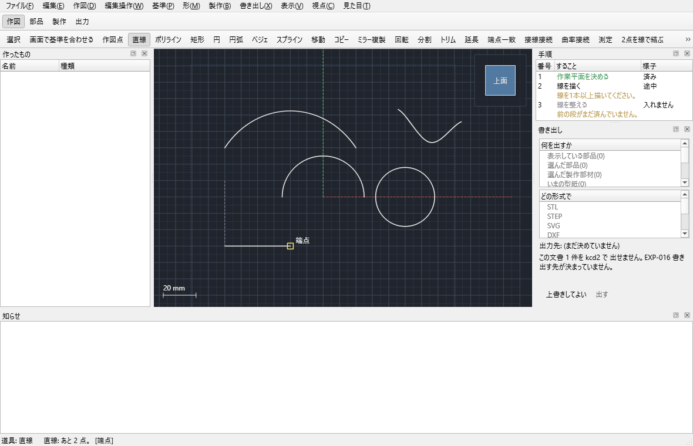
- 幾何交点と端点をグリッドより優先し、中点なども候補にします。
- Ctrlを押している間は吸着を完全に止めます。F3は吸着全体の入切です。
- Shiftは水平・垂直固定、矩形では正方形固定です。
- グリッドは間隔、副点数、基準、原点を数値または画面上の点で変更できます。
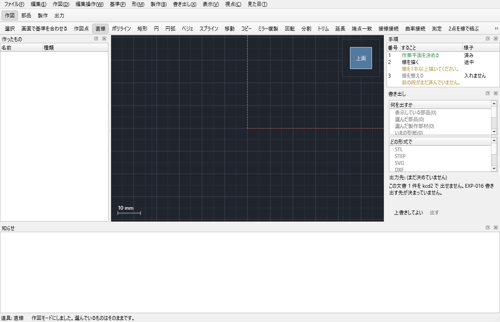
4. 作業平面
作業平面はワイヤーの所有者ではありません。平面を動かして追従する線、3D位置を保つ線、参照だけに使う線を区別できます。新しい文書にはtop_XY、front_XZ、side_YZとX/Y/Z軸があります。
| 作り方 | 必要なもの | 用途 |
|---|---|---|
| 基準面 | XY / XZ / YZ | 原点を通る標準面 |
| 点と法線を数値指定 | 原点XYZ、法線XYZ、面内X | 任意姿勢を完全に数値指定 |
| 3点 | 同一直線上でない3点 | 既存形状へ合わせる |
| 平面から離す | 平面1つ、距離 | 平行な断面を置く |
| 辺まわりの角度 | 平面1つ、直線1本、角度 | 基準面を軸まわりに傾ける |
| 点を通る平行面 | 平面1つ、点1つ | 既存点位置へ平面を移す |
| 2平面の中央 | 平行な平面2つ | 左右・上下の中央断面 |
| 2直線から | 直線2本 | 同一平面上の辺から決める |
| 線上で直角 | 曲線1本、位置0〜1 | 曲線に直角な断面 |
| 点を通る接平面 | 曲面上の点 | 局所的な接線方向で作図 |
| 円筒・円錐の中央 | 対応する面または円形辺 | 軸に直角な中央断面 |
| 辺を通る接平面 | 曲面の辺1本 | 接続部の作図面 |
一直線上の3点、平行でない2平面、ゼロ長の軸などでは作りません。必要な材料と理由が右の棚と知らせに出ます。
5. ワイヤー編集
直線だけでなく、円弧、円、ベジェ、B-splineを含む複合ワイヤーを扱います。元の曲線種類を保てない操作は黙って折れ線へ変換しません。
| 操作 | 使い方 | 結果 |
|---|---|---|
| 数値で編集 | 作業平面または同種の線からなるワイヤーを1つ選ぶ | 点、中心、軸、半径、角度を種類を保って更新 |
| トリム | 対象と境界を選び、残す側を画面で指定 | 直線・曲線を交点まで切る |
| 延長 | 対象端と境界、または長さを指定 | 曲線条件を保って伸ばす |
| 分割 | 線上位置または交点を指定 | 元ワイヤーを複数区間へ分ける |
| 移動・コピー | 選択後、移動元と移動先の2点 | 3D位置を平行移動。コピーは元を残す |
| ミラー・回転 | 鏡の2点、または中心と2方向 | 元を残した対称複製、指定角度の回転 |
| 結合 | 2つの鎖を選択 | 向きと端点を検査して1本へ |
| 端点・接線・曲率接続 | 2鎖を選び、動かす側を指定 | 位置、接線、曲率の連続を段階的に作る |
| C面取り・R丸め | 2辺、残す側、切戻し量または半径 | 交点付近を直線または円弧へ置換 |
| 角の一括加工 | ポリラインと量、必要なら頂点番号 | 直線同士の全角または1角を落とす・丸める |
| オフセット | ワイヤーと平面内距離 | 元を残して平行な写しを作る |
| 2線を交点まで | 直線2本 | 互いの交点まで延長または短縮 |
| 交点に点 | ワイヤー2本以上 | 実3D交点へ作図点を置く |
| 基準線 | ワイヤーを選ぶ | 形を変えず一点鎖線表示へ設定・解除 |
V1の「一致解除」「滑らか解除」に相当するコマンドはありません。V2の端点一致・接線・曲率接続は永続拘束ではなく、実行時に形を変更する操作だからです。解除する場合はUndoまたは数値・制御点編集で形を直します。
6. 測定
Mで測定棚を開きます。測定は文書を変えず、必要な結果だけを参照寸法または作図点として残せます。
| モード | 入力 | 表示 |
|---|---|---|
| 2点間 | 任意の2点 | 3D全長、dX、dY、dZ、XY/XZ/YZ投影距離、各軸との角度 |
| 3点角度 | 始点、頂点、終点 | 0〜180度の角度 |
| 要素 | 線、円弧、円、曲線 | 長さ、両端、半径、中心、接線、法線、曲率 |
| 2要素 | 直線と曲線など | 最短距離、接線角度、法線角度 |
測った点・中心・制御点は「点として残す」、値は「寸法を残す」で文書へ追加できます。線上位置は0〜1の値で指定できます。
7. 形状ガイド
複雑な曲面は、複数のワイヤーを役割表へ入れて作ります。1つの論理的な外形や断面が複数の直線・円弧・ベジェ・B-splineで構成されても、1行へ順に追加できます。両端で閉じる外形や、断面端がガイド途中へ接する形も検査対象です。
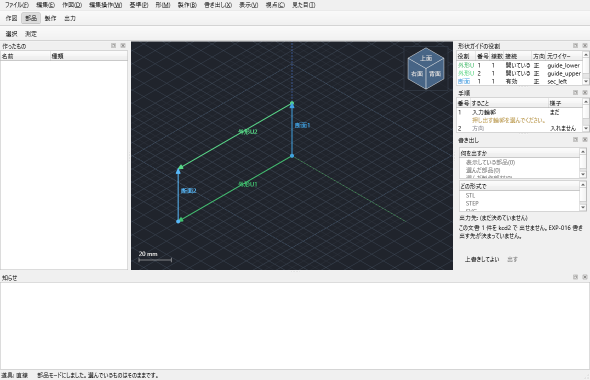
役割表の操作
- 面の作り方を選びます。
- ワイヤーを選び「選択を表へ」。1本の断面が複数ワイヤーなら、行を選んで「選択を既存行へ追加」。
- 行の上下、方向反転、削除で対応を整えます。
- 接続欄を確認して「表から面を作る」。入力線との最大ずれが許容外なら作成しません。
| 作り方 | 役割と条件 | 向く形 |
|---|---|---|
| 平面 | 閉じた外形1つ、必要なら閉じた穴 | 自由な混成曲線で囲んだ平面 |
| ルールド | 断面2つ | 2断面を直線的につなぐ面 |
| ロフト | 断面3つ以上 | 複数断面を滑らかに通る面 |
| 案内付きロフト | 外形U 2本と、それぞれへ届く断面 | 外周と断面の両方を指定する車両前面 |
| 曲線網 | U 2本以上、V 2本以上、全交差 | 縦横の断面網で制御する曲面 |
| 境界埋め | 閉じた3〜4辺 | 周囲だけ決まっている穴埋め面 |
| 離した面 | 元の形状ガイド1つと距離 | 面の平行オフセット |
| 回転体 | 断面1本、軸の直線1本、0〜360度 | 円筒、ドーム、旋盤形状 |
非平面の閉じた輪郭だけから作れる曲面は一意ではありません。ロフト、案内付きロフト、曲線網、境界埋めのどれかを選び、必要な役割を明示します。
投影
- 「面へ投影」は一般の平面・面へ線を写します。
- 「曲面へ投影」は作業平面方向に沿って1枚の形状ガイドへ落とし、窓などの元線を作ります。
- 「回り込み投影」は2枚以上の面をまたぐ線を面ごとの区間に分けます。面間を勝手な直線で橋渡ししません。
8. 部品と押し出し
V2には独立した「板材」幾何型はありません。材料、板厚、積層、用途は部品または製作モデルの属性です。形状ガイドは設計補助、部品は体積を持つ実体として区別します。
押し出し
| 項目 | 選択肢 |
|---|---|
| 入力 | 閉じた輪郭、穴、複数の離れた輪郭。開いた線はワイヤー出力だけに利用 |
| 方向 | 作業平面法線、面法線、XYZ数値 |
| 終端 | 距離、対称距離、両側別距離、選択した作業平面まで、貫通するまで |
| 出力 | 押し出し先の輪郭ワイヤー、側面境界ワイヤー、部品、またはワイヤーと部品の両方 |
| 演算 | 新規、既存部品へ足す、既存部品から引く |
作成前に体積、面数、部品数を調べます。元ワイヤーは削除せず、作り方として参照します。閉じていない線で部品を要求した場合、ゼロ体積や閉じていない結果は理由を出して断ります。
ほかの立体化
- 面に厚み: 形状ガイドを外側・中央・内側へ厚み付けします。
- 面を平面まで: 形状ガイドと作業平面の間を埋めます。面が相手をまたぐ場合は断ります。
- ワイヤー群から部品: 閉じた3Dのかごを検出し、1つの閉じた殻につき1部品を作ります。
- 足す・引く: 選択順の1つ目を土台、2つ目を相手にします。何も変わらない演算や空になる結果を成功扱いしません。
- 治具: 面から指定すき間だけ離した当たり面と、厚み付き当て板を1操作で作ります。治具も通常の部品です。
- 固定: 派生形状を独立した実体にします。元は消さずに隠します。
9. 製作近似と型紙
理想の部品・形状ガイドを、紙やプラ板で作れる別オブジェクトへ変換します。大きな連続部材を優先し、表示用三角形をそのまま大量の部品にはしません。
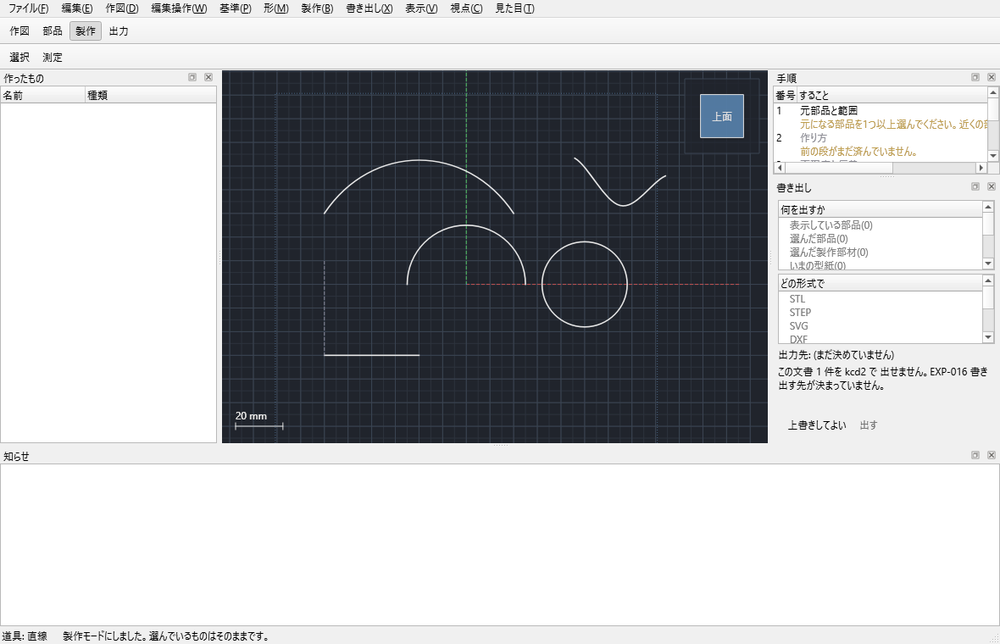
作成手順
- 部品または形状ガイドを1つ選び「製作モデルを作る」。元の完成形は残ります。
- 方式をV1型の帯近似、またはV2型の面分類から選びます。
- 分割軸、自動または手動境界、部材数上限、最小幅、再現度、板厚、最大許容ずれ、U/V範囲を指定します。
- 窓・ライトなどの閉じた線は「境界の役割」、開いた折り線も同じ操作で登録します。切断する開いた線は「切れ目にする」。
- 「プレビュー更新」で元形状の変更を反映し、「型紙を作る」で平面部材を作ります。
- 組立率0〜100%と、必要なら曲げる部材番号を指定して途中状態を確認します。
- 「固定で作るもの」をワイヤーのみ・部品のみ・両方から選び、「現在状態を固定」。任意の曲げ状態を通常の編集・出力対象にします。
開口・折り・切れ目
| 元ワイヤー | 役割 | 型紙 |
|---|---|---|
| 閉じた輪 | 窓、ライト、扉などの開口 | 切り抜き。部材境界をまたぐと各部材へ取り分け |
| 閉じていない線 | 折り線 | 輪郭とは別の折り線層 |
| 開線を「切れ目にする」 | 逃げ切り、スリット | RELIEF層。部材は分けない |
| 接続スコープ | 近似部と周囲の接続線 | 近似後の実形状へ寄せた別ワイヤー |
組立状態の約束
- 0%は平ら、100%は完成形です。途中値はヒンジ軸まわりの剛体回転で、面を頂点ごとに線形補間しません。
- 0%、30%、100%で各辺長と部材寸法を保ちます。組立率で寸法が変わる場合は不具合です。
- 固定した途中状態はワイヤーと部品にでき、選択した部品だけをSTL・STEPへ出せます。
- 再現度を上げたときの最大偏差は増加させず、最大偏差とRMS偏差をmmで確認します。
現状の「切れ目にする」は平らな製作部材上の開いた線が対象です。二重曲率面へ自動でV字・曲線側辺の切れ込みを設計し、それだけで展開可能にする処理はまだ実用経路へ結線されていません。無理な面は許容ずれ付きの帯近似または追加分割を使い、条件を満たさなければ断ります。
10. 保存と出力
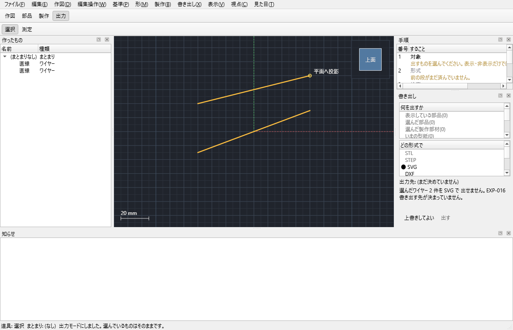
| 出す対象 | 形式 |
|---|---|
| 表示している部品 | STL / STEP |
| 選んだ部品 | STL / STEP |
| 選んだ製作部材 | STL / STEP / SVG / DXF / 1:1 PDF |
| いまの型紙 | SVG / DXF / 1:1 PDF |
| 選んだワイヤー | SVG / DXF / 1:1 PDF |
| 選んだものだけの文書 | kcd2 |
| この文書 | kcd2 |
- 「出力を検査」で閉鎖性、自己交差、体積、選択数などを先に調べます。保存時にも同じ検査を再実行します。
- STLとSTEPは同じ検査済みB-Repから作ります。表示メッシュだけを根拠にしません。
- 型紙は1:1で、紙に収まらないからといって自動縮小しません。
- 保存先未指定、未対応形式、既存ファイルの未承認上書きは、ファイルを作る前に断ります。0バイトを残しません。
- 選択した任意部分は別の
.kcd2へ保存できます。参照に必要な上流要素も一緒に収集します。
11. 流線形鉄道車両前面の実用試験
全機能説明と同時に、ER1 / 初期ER2の丸形前頭部を参考にした1/87試験体を作りました。これは歴史車両の正確な復元寸法ではなく、円筒に近い腰部と二重曲率の肩、複数窓が混在する実装検査用近似形状です。
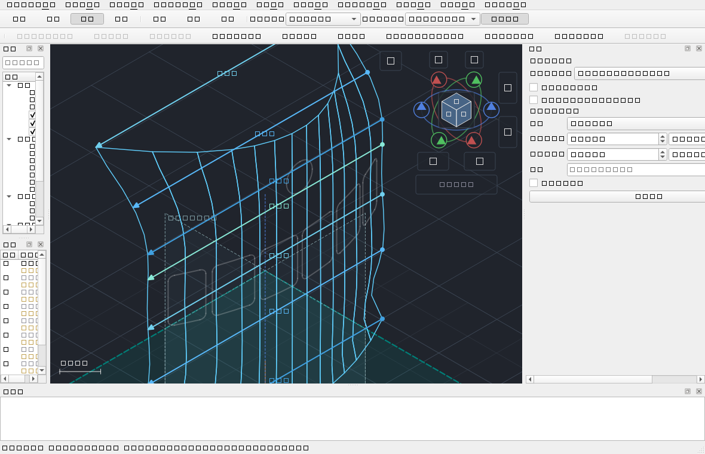
| 項目 | 値・結果 |
|---|---|
| 縮尺と幅 | 1/87。資料値3520 mmを換算した40.4598 mm |
| 高さ | 約41.38 mm。試験用近似値 |
| 曲面 | 7本の水平断面を通る滑らかなロフト。上部ほど前後・左右の二重曲率を強くする |
| 外板 | 形状ガイドから厚さ0.20 mmの体積ある部品を生成 |
| 開口 | 左右3枚ずつの角丸窓6個と、中央上部の曲線円形前照灯1個 |
| 製作近似 | 帯近似、再現度6、許容ずれ0.11 mm、最大24部材、最小幅2.0 mm |
| 自動検査 | ロフトの断面一致、厚み後の正体積、7開口の型紙保持、保存再読込、同一生成結果を確認 |
| カーネル検査 | 実OCCTでロフトと厚みを生成し、その前頭部外板をSTEP・STLへ変換 |
見本: samples\streamlined-railway-nose-1-87.kcd2。生成器と配布ファイルのバイト一致を毎回の試験で確認します。
車体幅以外の奥行き、曲率、窓、灯具寸法は資料で確認した実車寸法ではありません。試験用近似値を実寸として扱わないでください。
12. 制限と診断
現在の主な制限
- 二重曲率を1枚の平板へ無伸縮で展開することはできません。許容ずれ内の帯近似、切れ目、追加分割が必要です。
- 曲面上の自動V字・曲線切れ込み、のりしろ、自動ネスティングは完成していません。
- 円弧の始点法線指定と円弧長入力はまだ画面へ結線されていません。現状は始点の接線方向・半径・中心角で指定します。
- 押し出しの「選んだ面まで」は現在、作業平面を終端として使います。一般曲面を終端にする画面操作は未結線です。
- 本格的なアセンブリ拘束、干渉解析、FEA、CAM、K-factor自動計算、図枠・公差記号・部品表は対象外です。
- 三角形メッシュは表示・検査・STL出力用で、主要編集対象や型紙の正本ではありません。
- 形状ガイドそのものはSTL・STEPにできません。厚み付け、押し出し、または途中状態の固定で部品にしてから出します。
よく見る理由番号
| 番号 | 意味 | 対処 |
|---|---|---|
GEO-W001 | 隣り合う線がつながっていない | 端点を吸着または一致させる |
GEO-W003 | 端点に許容外の隙間 | 表示された距離を見て修正 |
GEO-W004 | 自己交差 | 交点で分割し、不要区間をトリム |
GEO-G008 | 作った面が指定線を通らない | 外れた行、順序、方向、断面密度を修正 |
UI-R009 | 形状ガイドの役割不足 | 知らせに示された役割の行を追加 |
FAB-P005 | 無伸縮で展開できない | 許容ずれ、分割、近似方式を見直す |
EXP-013 | 立体を持たない対象の3D出力 | 先に部品化または固定 |
EXP-015 | 出すものがない | 対象を選ぶ |
EXP-016 | 保存先がない | 出す先を選ぶ |
EXP-017 | 対象と形式が不一致 | 対応形式へ変更 |
EXP-018 | 既存ファイルの上書き未承認 | 上書きを明示するか別名にする |
全理由番号はdocs\v2\diagnostic-catalog.mdにあります。重い処理には取消経路があり、取消時は文書を変更しません。
13. マウスとキー
| 操作 | 結果 |
|---|---|
| 左クリック | 選択、点を置く、操作部をつかむ |
| 中または右ドラッグ | 画面を平行移動 |
| Shift+中ドラッグ | 視点を連続回転 |
| ホイール | 拡大縮小 |
| 作図中の右クリック | ポリライン・スプラインを確定、その他は取消 |
| Ctrlを押しながら作図 | 吸着なし |
| Shiftを押しながら作図 | 水平・垂直、矩形は正方形 |
| Backspace | 最後の点を戻す |
| Esc | 進行中操作を取消し、選択道具へ戻る |
主要ショートカット
| ファイル | Ctrl+N 新規 / Ctrl+O 開く / Ctrl+S 保存 / Ctrl+Shift+S 別名保存 |
|---|---|
| 履歴・表示 | Ctrl+Z Undo / Ctrl+Y Redo / Del 削除 / F 全体 / F3 吸着 |
| 作図 | V 選択 / D 点 / L 直線 / P 連続線 / R 矩形 / C 円 / A 円弧 / B ベジェ / S B-spline |
| 接続・編集 | I 端点一致 / T 接線 / Shift+T 曲率 / X トリム / E 延長 |
| 工程 | M 測定 / G 形状ガイド / Shift+E 押し出し |
14. 全コマンド一覧
現在のコマンド台帳と1対1で対応します。灰色のコマンドは未実装ではなく、必要な選択が不足しています。内部IDは保存形式の機能型とは別の安定した操作IDです。
共通・ファイル・表示
| 操作 | 条件・結果 |
|---|---|
新規 file.new | 空文書。未保存変更は確認。 |
開く file.open | kcd2と対応範囲のV1 kcdを検証して開く。 |
保存 file.save | 現在の場所へ原子的に保存。 |
別名保存 file.save_as | 新しい場所へ保存。 |
元に戻す edit.undo | 直前の文書操作を戻す。 |
やり直す edit.redo | Undoを再適用。 |
削除 edit.delete | 下流参照を検査して削除。 |
選択を隠す view.hide_selected | 表示だけ隠す。 |
すべて表示 view.show_all | 全要素を再表示。 |
選択 selection.activate | 選択道具へ戻る。 |
測定 measure.open | 測定棚を開く。 |
数値で編集 edit.numeric | 平面・同種曲線ワイヤーを編集。 |
全体表示 view.fit_all | 可視形状へカメラを合わせる。 |
選択に正対 view.align_selection | 選択平面へ正対。 |
正対 view.align_workplane | 作図面へ正対。 |
表示設定 view.display_settings | 線幅・色・背景を変更。 |
設計表示 view.stage_all | グリッド・補助線も表示。 |
グリッドを消す view.stage_no_grid | グリッドだけ非表示。 |
完成形 view.stage_no_construction | 補助線も非表示。 |
選択だけ view.stage_selection_only | 選択物だけ表示。 |
名前を変える entity.rename | 選択要素を改名。 |
スナップ snap.toggle | 吸着の入切。 |
作業中グループ group.set_active | 新規元要素の格納先。 |
作業平面を使用 workplane.set_active | 選択平面を作図面へ。 |
作図・ワイヤー編集
| 操作 | 条件・結果 |
|---|---|
作図点 draw.point | 3D位置または平面UVへ点。 |
直線 draw.line | 2点、座標、長さ・方向。 |
ポリライン draw.polyline | 複数直線を1ワイヤーへ。 |
矩形 draw.rectangle | 対角または幅・高さ。 |
円 draw.circle | 中心・半径。 |
円弧 draw.arc | 3点、両端+半径、始点+接線方向・半径・中心角。 |
ベジェ draw.bezier | 4制御点。 |
スプライン draw.spline | 4点以上のB-spline。 |
トリム wire.trim | 境界と残す側で切る。 |
延長 wire.extend | 境界または長さまで伸ばす。 |
分割 wire.split | 線上位置・交点で分ける。 |
移動 wire.move | 2点差で移動。 |
コピー wire.copy | 元を残して複製。 |
ミラー wire.mirror | 指定線を鏡に複製。 |
回転 wire.rotate | 中心と2方向で回転。 |
結合 wire.join | 2鎖を検査して結合。 |
端点一致 wire.coincident | 2鎖の端点を一致。 |
接線接続 wire.tangent | 接線方向まで連続化。 |
曲率接続 wire.curvature | 曲率まで連続化。 |
C面取り wire.chamfer | 2辺を直線で接続。 |
R丸め wire.fillet | 2辺を指定半径で接続。 |
オフセット wire.offset | 平面内に写し。 |
2線を交点まで wire.meet_lines | 2直線を交点へ合わせる。 |
交点に点 wire.intersection_points | 実交点へ作図点。 |
角を落とす wire.corner_chamfer | ポリラインの角をC加工。 |
角を丸める wire.corner_fillet | ポリラインの角をR加工。 |
基準線に設定 wire.set_datum | 一点鎖線表示へ。 |
基準解除 wire.clear_datum | 通常線へ戻す。 |
作業平面を作る workplane.create | 12通りから平面。 |
グリッド grid.edit | 間隔・副点・原点。 |
グリッド原点 grid.move_origin | 画面の点へ原点を合わせる。 |
形状ガイド・部品
| 操作 | 条件・結果 |
|---|---|
形状ガイド guide.create | 選択断面から自動方式で面。 |
回転体 guide.revolve | 断面を直線軸まわりに回す。 |
面の作り方 guide.set_method | 役割表の方式。 |
選択を表へ guide.add_row | 新しい役割行。 |
既存行へ追加 guide.append_row | 複数線分を同じ鎖へ。 |
行を上へ guide.row_up | 役割内の順序を上へ。 |
行を下へ guide.row_down | 役割内の順序を下へ。 |
行を削除 guide.row_remove | 表から除き元線は残す。 |
向きを反転 guide.row_reverse | 線順と方向を反転。 |
表から面 guide.build | 役割・接続を検証して面。 |
表を空に guide.clear | 方式を残して全行削除。 |
面へ投影 wire.project | 平面・面へ投影。 |
回り込み投影 wire.wrap_project | 複数面へ区間分割投影。 |
曲面へ投影 wire.project_surface | 作図面方向に1曲面へ。 |
押し出し part.extrude | ワイヤー・部品・両方。 |
面に厚み part.thicken | 形状ガイドを部品化。 |
治具 part.surface_jig | 当たり面と当て板。 |
厚み位置 part.thickness_placement | 外・中央・内。 |
平面まで立体 part.thicken_to_plane | 面と平面間を立体化。 |
かごから部品 part.from_wire_cage | 閉じた3Dかごを部品化。 |
足す part.boolean_add | 2部品の和。 |
引く part.boolean_cut | 2部品の差。 |
現在状態を固定 derived.freeze | 派生物を独立実体へ。 |
製作・出力
| 操作 | 条件・結果 |
|---|---|
製作モデル fabrication.create | 工作用の別近似モデル。 |
境界の役割 fabrication.assign_role | 閉輪郭は開口、開線は折り線。 |
切れ目 fabrication.assign_relief_cut | 平面部材上の開線をRELIEFへ。 |
プレビュー更新 fabrication.preview_update | 元形状の変更を反映。 |
型紙 fabrication.create_pattern | 製作部材を平面配置。 |
組立状態 fabrication.set_assembly | 全体・指定部材の組立率。 |
近似方式 fabrication.set_method | 帯近似と面分類を切替。 |
固定出力 fabrication.freeze_output | ワイヤー・部品・両方。 |
接続スコープ fabrication.set_connection_scope | 接続線を近似形へ追従。 |
状態を固定 fabrication.freeze_state | 任意組立率を独立実体へ。 |
出力検査 export.validate | 選択部品を事前検査。 |
STL export.stl | 検査済み部品をSTLへ。 |
STEP export.step | 検査済み部品をSTEPへ。 |
SVG export.svg | 型紙・ワイヤーをSVGへ。 |
DXF export.dxf | 型紙・ワイヤーをDXFへ。 |
PDFとkcd2の保存は出力棚の対象・形式選択から使います。ビューキューブ、パン、ズーム、世界/相対軸回転は文書を変更しないカメラ操作です。